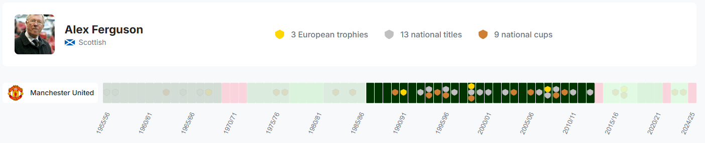
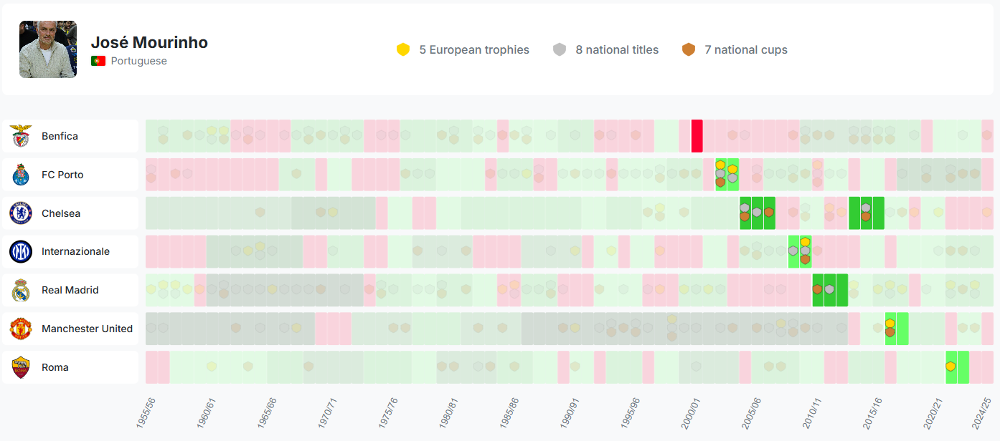
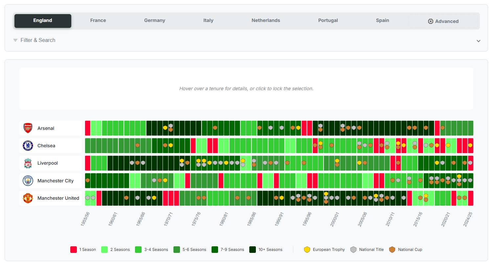

In the frantic, high-stakes world of modern football, the manager's seat is the hottest in the house. It’s a results-driven business, a relentless merry-go-round where a handful of bad games can undo years of work. The romantic ideal of a long-serving manager, an architect patiently building a club in their own image, feels like a relic from a bygone era.
Or is it?
While the managerial carousel spins faster than ever, history shows us that the game's greatest triumphs have often been born from two vastly different philosophies. There is the Architect, the dynasty-builder who becomes synonymous with their club, and there is the Journeyman, the hired gun who conquers, leaves, and conquers again elsewhere.
Which path truly leads to glory? Using a rich dataset spanning nearly 70 years and 35 of Europe's elite clubs, we can dissect these two archetypes and explore whether stability or surgical strikes yield the ultimate prize.
The Architects: Forging an Empire
When you think of a dynasty, you think of Sir Alex Ferguson. His 26-year reign at Manchester United is the definitive blueprint for long-term success. It's a tenure that seems almost impossible today. After a difficult start, a famous fan banner on a cold December day in 1989 read, "3 years of excuses and we're still crap. Ta-ra Fergie." The board’s decision to stick by their man would become the single most important in the club's modern history.

Ferguson's genius wasn't just winning; it was rebuilding. The data clearly shows his ability to construct multiple great sides, winning the league with the swashbuckling team of the mid-90s built around the "Class of '92," and doing it all over again a decade later with the ruthless European force led by Cristiano Ronaldo and Wayne Rooney. His relentless drive was underpinned by his infamous "hairdryer treatment"—a face-to-face tirade so intense that, as his players said, it would physically blow their hair back. It was this relentless demand for excellence that underpinned his dynasty. The result: 13 league titles, 5 FA Cups, and 2 Champions League trophies.
Across the continent, another architect was laying the foundations for a different kind of dynasty. Johan Cruyff’s time at FC Barcelona (1988-1996) was shorter, but his impact was arguably just as profound. He delivered the club's first-ever European Cup in 1992 and strung together four consecutive La Liga titles. More than the silverware, Cruyff gifted Barcelona an identity. He implemented a footballing philosophy—a legacy carried on by his own players, most notably Pep Guardiola—that was so total and so revolutionary, it became the club's very DNA. His self-belief was legendary, captured in one of his most famous quotes:
"If I wanted you to understand it, I would have explained it better."
The Journeymen: Have Trophies, Will Travel
In stark contrast to the builders are the specialists—elite coaches who move from city to city, collecting silverware like souvenirs.
José Mourinho is the prototype. His career is a grand tour of Europe's footballing capitals, defined by an "us against the world" mentality. Nothing illustrates this better than a story from his time at Chelsea in 2005. After being banned from the touchline for a Champions League quarter-final, he reportedly arrived at Stamford Bridge early, hid in the dressing room, and was then wheeled out of the stadium hidden in a laundry basket to avoid being seen. It's a tale that perfectly captures his siege mentality. It worked. Our data tracks his path: an improbable Champions League with FC Porto, domestic dominance with Chelsea, a historic treble with Internazionale, and a La Liga title with Real Madrid. His stays are often short and combustible. After winning the treble with Inter in 2010, president Massimo Moratti confessed to feeling "a bit abandoned" by his immediate departure.

If Mourinho is fire, then Carlo Ancelotti is ice. The calm, paternal Italian has a CV that is, frankly, absurd in its breadth. Our data confirms his status as a serial winner, lifting league titles or European Cups with AC Milan, Chelsea, Real Madrid, Paris-Saint-Germain, and Bayern Munich. Like Mourinho, he has answered the call to return to former clubs, managing both Chelsea and Real Madrid in two separate spells. Yet where Mourinho’s returns can be fraught, Ancelotti’s calm authority brought even more success to Madrid, including two more Champions League trophies, cementing his status as perhaps the greatest "hired gun" of all.
The Grey Area: When Brilliance Burns Bright, and Fast
Not every great manager fits neatly into these two boxes. Some, like the mercurial Brian Clough, were architects who were forced to be journeymen. Though not in our core dataset of 35 clubs, his story is essential. He took two unfashionable, provincial clubs, Derby County and Nottingham Forest, and led them to the English league title. With Forest, he achieved the unthinkable by winning back-to-back European Cups. Yet, his confrontational style meant he could never land a top job. His infamous spell at Leeds United in 1974 lasted just 44 days. In his very first address to the reigning champions, he reportedly told them that as far as he was concerned, they could throw all their medals in the bin because they had won them by cheating. He was a dynasty-builder at heart, but his personality made him too volatile for most boardrooms.
Conclusion: Two Paths to the Top
The data confirms there is no single blueprint for success. The romantic ideal of the Architect, like Ferguson, is rare and requires an almost unconditional trust between club and coach. It forges a legacy that transcends trophies.
Opposite that is the pragmatic reality of the Journeyman, the specialist like Ancelotti or Mourinho, hired for a specific task: win now. It's a model perfectly suited to the fast-paced, results-oriented world of modern top-level football.
Ultimately, the "Managerial Merry-Go-Round" shows that both patience and opportunism can lead to the pinnacle of the sport. The choice for any club is: are we building a monument for the ages, or are we hiring the best specialist for today's job?
Explore the Data Yourself

Our interactive tool allows you to explore club histories, filter by nationality, or track a manager's career. Dive in and discover the patterns for yourself.
Launch the Interactive VisualizationSources
- Mancunian Matters (2014). 'Don't doubt David: Man who held up 'Ta Ra Fergie' banner...'
- Manchester Evening News (2013). ''Ta ra Fergie' banner fan reveals all in new book.'
- The Guardian (2003). 'Beckham's head cut in dressing-room row.'
- TNT Sports (2024). 'Johan Cruyff's best quotes...'
- Goodreads. 'Quote by Johan Cruyff.'
- Sky Sports (2019). 'Jose Mourinho explains how he hid in laundry basket...'
- SPORTbible (2022). 'Jose Mourinho Recalling The Time He Hid From UEFA In A Laundry Basket...'
- ESPN (2010). 'Moratti sad to be 'abandoned' by Mourinho.'
- The Independent (2009). 'The inside story of Brian Clough at Leeds.'
- The Guardian (2009). 'Brian Clough's 44 days of hell at Leeds.'